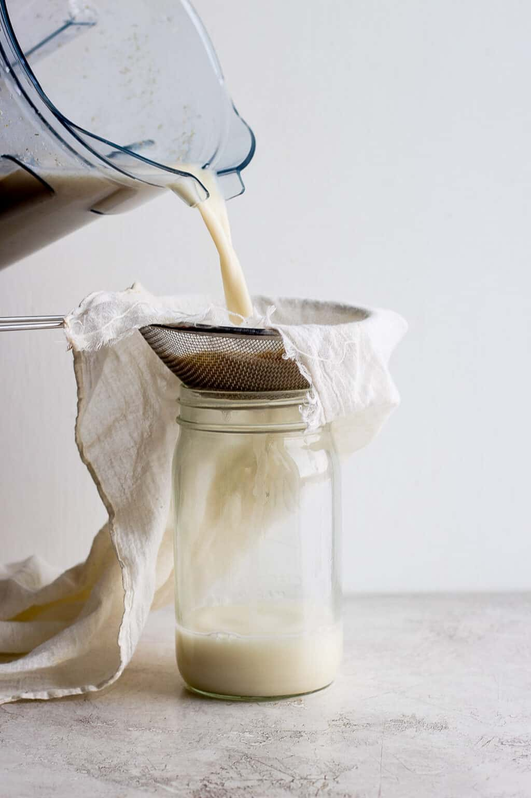

Recipe App
Home

BASE INGREDIENTS YOU NEED TO MAKE OAT MILK

HOW TO MAKE A BASIC OAT MILK
- Gather all ingredients.
- Place the oats and salt in a high-speed blender.
- Add the salt and combine all ingredients together.
-
Look for a nice milkiness but do not expect every speck of oats to be
incorporated into the liquid.
-
If you really need to blend more, wait a minute or two for the second
round of pulses so as not to heat the milk with the power of the
blender. You do not want to start cooking the oats as this creates a
gunky texture.